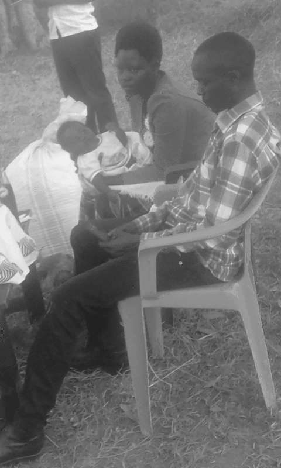

Welcome to the the Girigori family. Glory be to the almighty God. What you need to know about the family.
Biography

Orone Girigorio -> Dad
He is the biological father of the the GIRIGOR family. The Girigori family had 4 boys and 3 girls that include Okorikol Charles, Olinga Joseph, Kongai Mary, Ojakol Mike, Opeeny Godfrey, Anume Elizabeth and Anyait Proscovia. Girigori originates from the George which is the iteso's cultural way of pronoucing the christian name, George. According to history, Girigori Orone was a very good athlete, a reason he got nicknamed Agiret meaning the fastest. He's a born of Okorikol Elario and Kongai victonoria. From Toroma, Eastern part of Uganda.
Adie Medelena -> Toto
This is a mother of the Girigori family. A born of Kelim Orimai Kapujan Toroma Uganda. She a born of Opeded and Anyait Agiripina. All people of Toroma, Eastern part of Uganda. God the almighty bless the mothers in the world, Gold bless our motherAdie Medelena, her soul rest in eternity
Children
Okorikol Charles
The first born of The Girigori family.. Charles and Oumo Grace had 7 children including Orone John Bosco, Olinga Joseph, Adie Catherine, Okapel Simon Peter, Kongai, Kevin and Okedi Emmanuel
Olinga Joseph
The second born of The Girigori family.. Olinga and Grace had 7 children including Olinga Partrick, Itori Justine, Orinyo Ben, Ojakol, Ariko Cosmas, Okorikol simon, Tony
Kongai Mary
The second born of The Girigori family.. Olinga and Grace had 7 children including Olinga Partrick, Itori Justine, Orinyo Ben, Ojakol, Ariko Cosmas, Okorikol simon, Tony
Ojakol Michael
The second born of The Girigori family.. Olinga and Grace had 7 children including Olinga Partrick, Itori Justine, Orinyo Ben, Ojakol, Ariko Cosmas, Okorikol simon, Tony
Opeeny Godfrey
Opeeny Godfrey, a born of Omosingo village Kapujan, Toroma county, Toroma is located on the Eastern part of Uganda. His mother played a significant role in his education and career as a result he's a professional software engineer, details here

Anume Betty
This is a mother of the Girigori family. A born of Kelim Orimai Kapujan Toroma Uganda. She a born of Opeded and Anyait Agiripina
Anyait Proscovia
This is a mother of the Girigori family. A born of Kelim Orimai Kapujan Toroma Uganda. She a born of Opeded and Anyait Agiripina
Orone John Bosco
Elder son of Okorikol Charles
Olinga Partrick
Elder son of Olinga Joseph